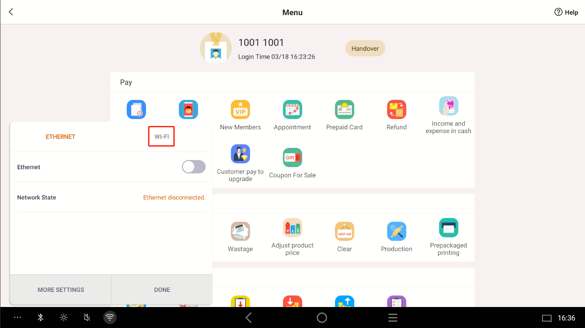
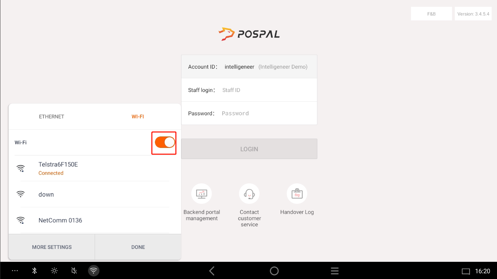
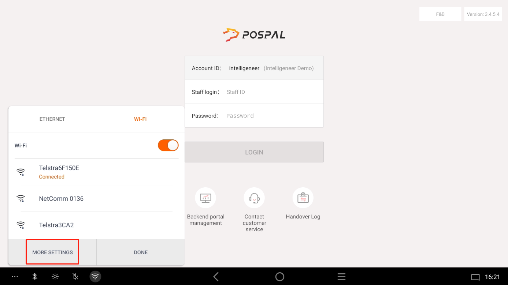
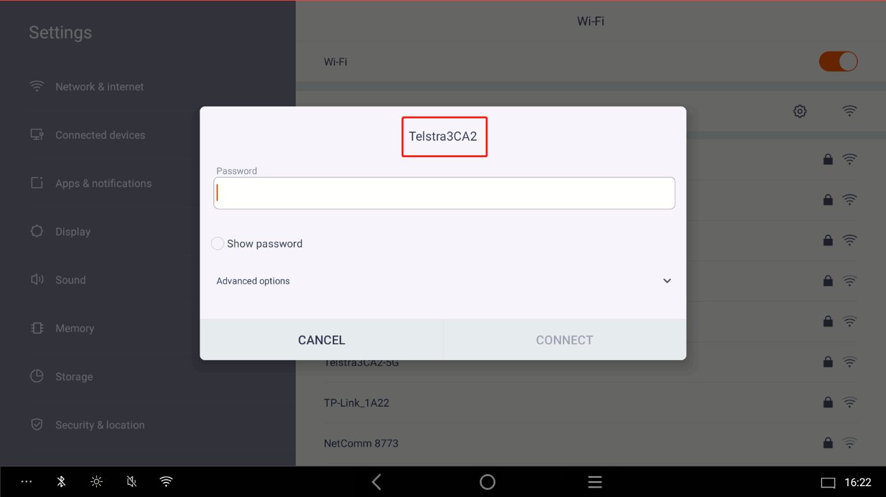
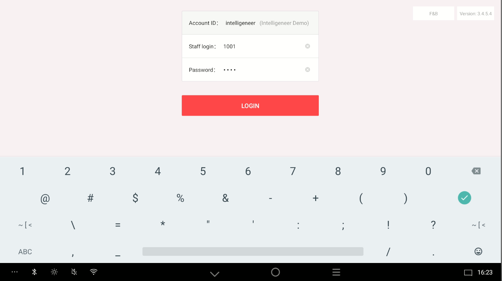
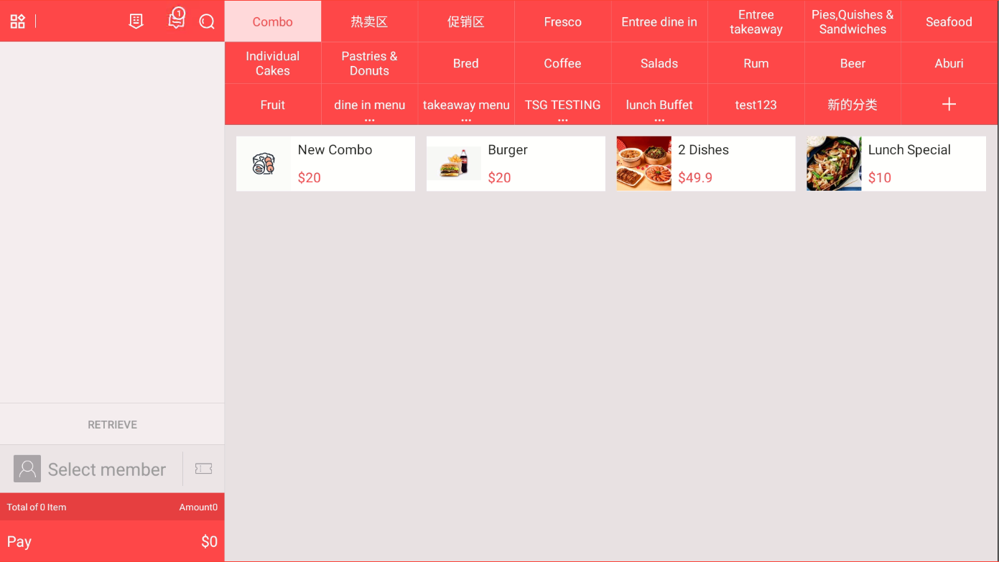
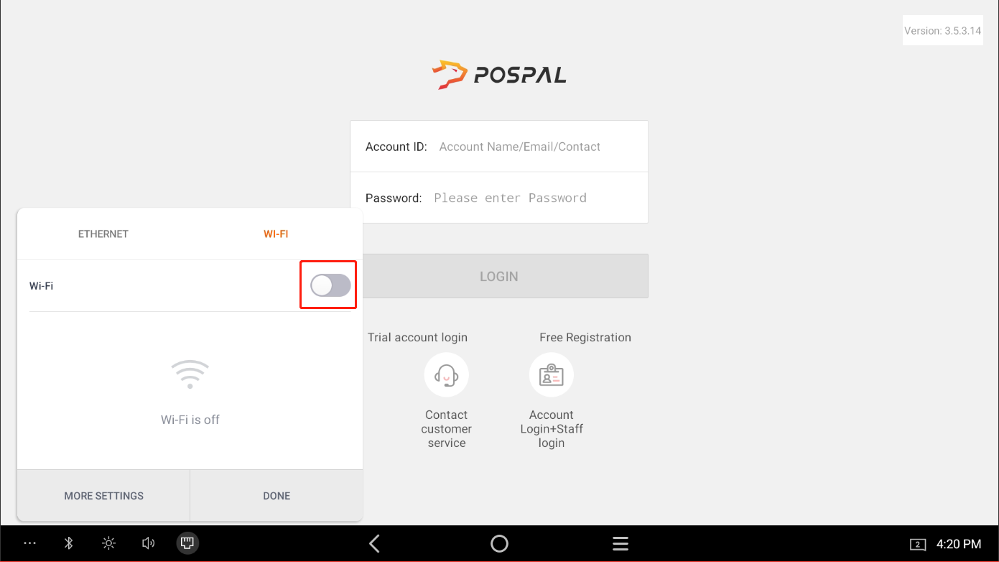
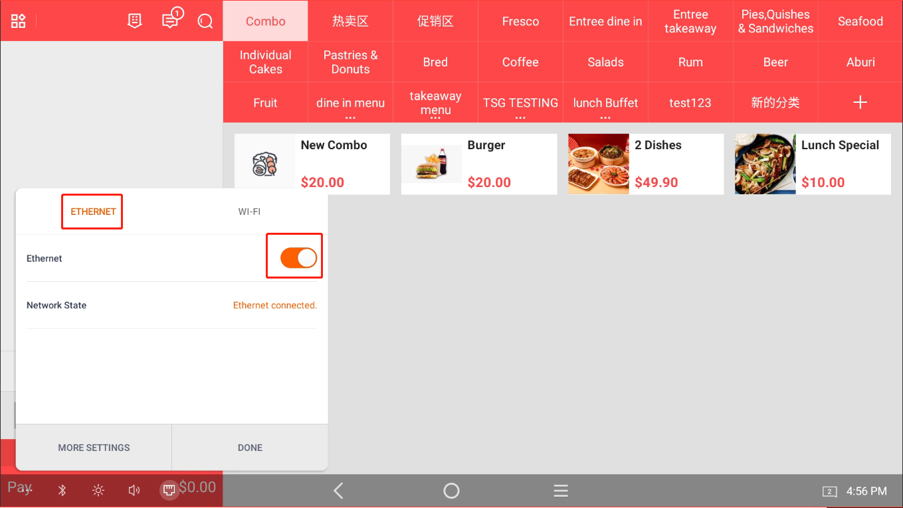

Login to POS System with Mobile Hotspot Without Internet Connection
Nov 13, 2024 · Charlie
In this chapter, We gonna Using a mobile hotspot to Login the PosPal system without internet access
- First we need to find the Fifth Button on bottom Left Corner
- Turn Off Ethernet Button
Switch to WiFi Section
Turn On WiFi Button
After Turn On WiFi, Press More Settings
Make Sure your Mobile Hotspot is On and also turn on the Maximize Compatibility

Select your Mobile Hotspot and input the Password
then Back to the Login Page, and login with your Staff account
After that you can see the Ordering Page
On the Order Page, back to the Fifth Button on bottom Left Corner To the WiFi Section, Turn Off the WiFi Button
and then Switch to Ethernet Section, turn on the Ethernet
This way, the ordering system can be used to place orders offline, and the kitchen printer and KDS can still function normally.